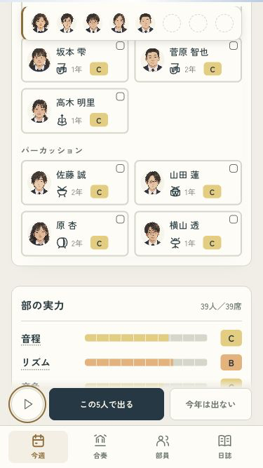
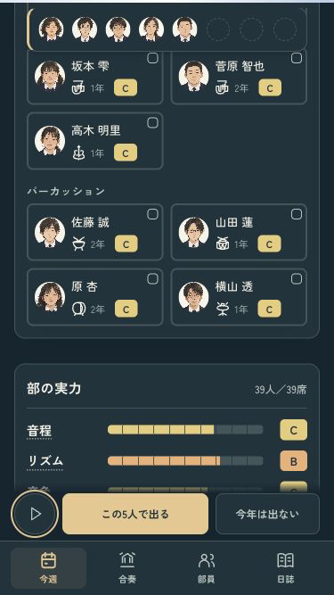
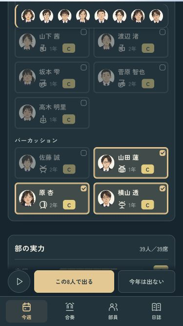

B · 舞台の中へ
選んだ仲間を、見失わない。
アンサンブルの人選で、選んだ顔を上に残しました。一覧の下まで見ても、どの子を選んだか、空きがいくつあるかを見渡せます。


8人を選んだとき

0〜8人・選択と顔の一致・全15曲の試聴・1年分の進行を確認済み。
iPhoneへ導入済み。今回は端末ロック中のため起動は未確認です。
ミラーリングなし · codex/design · pushなし · 変更と確認の記録
B · 舞台の中へ
アンサンブルの人選で、選んだ顔を上に残しました。一覧の下まで見ても、どの子を選んだか、空きがいくつあるかを見渡せます。



0〜8人・選択と顔の一致・全15曲の試聴・1年分の進行を確認済み。
iPhoneへ導入済み。今回は端末ロック中のため起動は未確認です。
ミラーリングなし · codex/design · pushなし · 変更と確認の記録